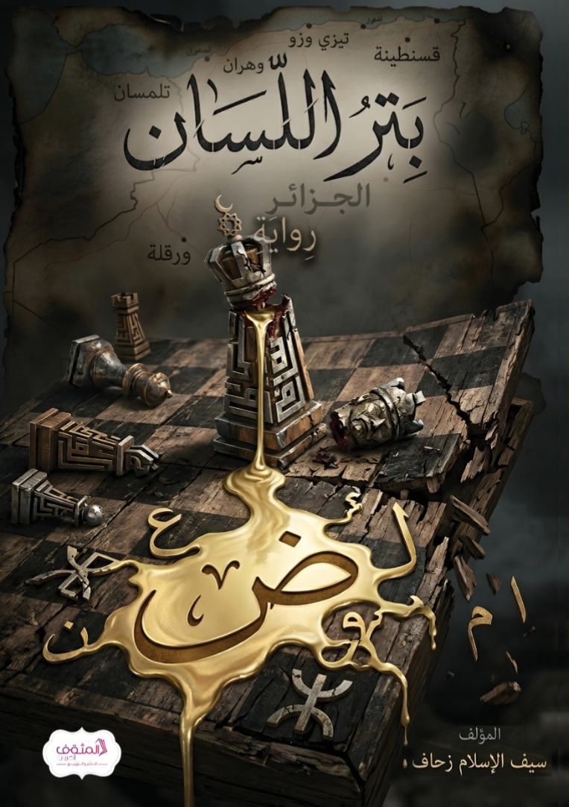

تدور أحداث "بتر اللسان" في جزائر النهضة، حيث يخوض المهندس ياسين رحلة استثنائية لتحقيق السيادة التقنية والاقتصادية لوطنه. تبدأ القصة في ورشة صغيرة بحي الياسمين بوهران، حيث يطور ياسين تقنيات متطورة تتحدى لوبيات الاستيراد الفاسدة. تتصاعد الأحداث في رحلة ملحمية تمتد من أزقة وهران إلى أعماق الصحراء ودهاليز القصر الرئاسي، في صراع بين العلم والفساد، بين السيادة والتبعية.
كانت الساعة تشير إلى الثالثة صباحاً بتوقيت وهران. في "حي الياسمين"، وبالتحديد في ورشة ضيقة تفوح منها رائحة الزيوت المعدنية الممزوجة برطوبة "الباهية" القادمة من جهة البحر، كان ياسين واقفاً أمام آلة الصباعة الثلاثية الأبعاد (D Metal 3 Printer). كان صوت المحركات الخطية يصدر طنيناً رئيساً يشبه تسبيحاً إلكترونياً وسط السكون، بينما كان "شعاع الليزر" يضرب مسحوق معدن "التيتانيوم" بدقة ميكرومترية، محولاً الغبار إلى صلب.
بالنسبة لياسين، لم يكن هذا مجرد تصنيع؛ كان "استخلافاً" علمياً يكسر قيود التبعية. مسح عرق جبهته وتأمل القطعة التي تتشكل ببطء؛ صمام محرك توربيني كان يُستورد بالعملة الصعبة، والآن يُصاغ بعقل جزائري في قبو متواضع.
توقف ياسين قليلاً، واستحضر في ذهنه أصلاً شرعياً لطالما آمن به: "إنَّ القوة ليست في السلاح وحده، بل في كمال العلم والقدرة" ... كانت هذه القاعدة هي وقوده النفسي؛ فالقدرة التي يطلبها المنهج ليست شعارات تُرفع، بل تمكين في الأرض يبدأ من إتقان الذرة والمعدن.
فجأة، اهتز هاتفه القديم برسالة من مجموعة "تليغرام" قديمة كان ينتمي إليها قبل "توبته" وانتقاله للمنهج السلفي. كان العنوان: "نداء النفير لحماية المسار الديمقراطي". وتحتها اقتباس يحرض على الخروج والمواجهة السياسية الحزبية.
ابتسم ياسين بسخرية مريرة؛ تذكر كيف كان في حراك 2019 يصرخ في شوارع "واجهة البحر" بنفس تلك الشعارات، ظاناً أن تغيير الوجوه سيغير الواقع قبل أن يدرك أن العلة في "البناء الفكري" لا في "الكراسي". أغمض عينيه، فهاجمته ذكرى قديمة من صباه:
ياسين طفل في العاشرة، جالس في "زاوية" بحي "الدرب". الرائحة خليط من البخور والرطوبة الجانبية. رأى "الشيخ" يضع يده على رأس مريض ويدعي منحه "البركة" للشفاء، بينما المريض يزداد شحوباً. سأل ياسين والده برباءة: "يا أبي، لماذا لا نذهب به إلى الطبيب في المستشفى الجامعي؟". كانت صفحة والده قاسية: "اسكت، هذه أسرار لا يدركها عقالك الصغير".
في تلك اللحظة، ولد في قلب ياسين كره عميق للخرافة التي تُعيب العقل باسم الدين، وللعنف الذي يُمارس باسم التربية.
عاد ياسين للواقع على صوت الآلة وهي تعلن انتهاء العملية. فتح الغطاء الزجاجي، وبردت القطعة ببطء. تذكر كلام الإمام محمد البشير الإبراهيمي الذي قرأه بالأمس حول حقيقة المنهج الذي يسلكه الآن: "إن السلفية الحقة هي التي تخرج الأمة من ظلمات الأوهام إلى أنوار الحقائق، ومن قيود التقليد إلى فضاء الاجتهاد المستمد من الكتاب والسنة ..."
أمسك ياسين بالقطعة المعدنية الصلبة، وهمس لنفسه: "هذا هو الطريق.. العلم هو السلطان، والشرع هو الميزان". لم يكن يعلم أن هذه القطعة ستكون هي الفتيل الذي سيشتعل حرباً باردة مع لوبيات الاستيراد في وهران، الذين لن يسمحوا لشاب "سلفي" بكسر احتكارهم للسوق تحت مسمى "الإبداع التقني".
"Batar Al-Lisan" (Cutting the Tongue) takes place in a renaissance Algeria, where engineer Yassin embarks on an extraordinary journey to achieve technological and economic sovereignty for his homeland. The story begins in a small workshop in the Yasmin neighborhood of Oran, where Yassin develops advanced technologies that challenge corrupt import lobbies. The events escalate into an epic journey from the alleys of Oran to the depths of the desert and the corridors of the presidential palace, in a struggle between science and corruption, sovereignty and dependency.
The clock was striking three in the morning Oran time. In the "Yasmin neighborhood," specifically in a narrow workshop filled with the scent of mineral oils mixed with the humidity of the "Bahia" coming from the sea, Yassin stood before a 3D metal printer (D Metal 3 Printer). The sound of the linear motors produced a humming noise, like an electronic chant amidst the silence, while the "laser beam" struck titanium metal powder with micrometer precision, turning dust into solid metal.
For Yassin, this was not just manufacturing; it was a scientific "succession" breaking the chains of dependency. He wiped the sweat from his forehead and contemplated the piece slowly taking shape—a turbine engine valve that used to be imported with hard currency, now being crafted by an Algerian mind in a modest basement.
Yassin paused for a moment, recalling a legal principle he had always believed in: "Strength is not in weapons alone, but in the perfection of knowledge and capability"... This principle was his psychological fuel; the capability demanded by the methodology is not raised slogans, but empowerment on earth that begins with mastery of the atom and metal.
Suddenly, his old phone vibrated with a message from an old Telegram group he used to belong to before his "repentance" and transition to the Salafi methodology. The title read: "The Call to Mobilize to Protect the Democratic Path." Beneath it was a quote inciting rebellion and political confrontation.
Yassin smiled bitterly, remembering how he used to shout the same slogans in the streets of "Wajhat al-Bahr" during the 2019 Hirak, thinking that changing faces would change reality, before realizing that the problem lies in the "intellectual structure," not in the "chairs." He closed his eyes, and an old childhood memory attacked him:
Yassin, a ten-year-old child, sitting in a "Zawiya" in the "Darb" neighborhood. The smell was a mix of incense and side humidity. He saw the "Sheikh" placing his hand on a patient's head, claiming to grant him "blessing" for healing, while the patient grew paler. Yassin asked his father innocently: "Dad, why don't we take him to the doctor at the university hospital?" His father's response was harsh: "Be quiet, these are secrets beyond your little mind."
At that moment, a deep hatred for superstition that defames the mind in the name of religion was born in Yassin's heart, and for violence practiced in the name of education.
Yassin returned to reality at the sound of the machine announcing the end of the process. He opened the glass cover, and the piece cooled slowly. He remembered the words of Imam Muhammad al-Bashir al-Ibrahimi, which he had read yesterday about the true nature of the path he now follows: "True Salafism is what leads the nation from the darkness of illusions to the lights of truths, and from the chains of imitation to the space of ijtihad derived from the Book and the Sunnah..."
Yassin held the solid metal piece and whispered to himself: "This is the path.. knowledge is the authority, and the law is the measure." He did not know that this piece would be the fuse that ignites a cold war with the import lobbies in Oran, who would not allow a "Salafi" young man to break their market monopoly under the guise of "technical innovation."
"Batar Al-Lisan" (Couper la langue) se déroule dans une Algérie en pleine renaissance, où l'ingénieur Yassin entreprend un voyage extraordinaire pour atteindre la souveraineté technologique et économique de son pays. L'histoire commence dans un petit atelier du quartier Yasmin à Oran, où Yassin développe des technologies avancées qui défient les lobbies d'importation corrompus. Les événements s'intensifient dans un voyage épique des ruelles d'Oran aux profondeurs du désert et aux couloirs du palais présidentiel, dans une lutte entre la science et la corruption, la souveraineté et la dépendance.
L'horloge indiquait trois heures du matin, heure d'Oran. Dans le quartier "Yasmin", plus précisément dans un atelier étroit imprégné de l'odeur des huiles minérales mêlée à l'humidité de la "Bahia" venant de la mer, Yassin se tenait devant une imprimante 3D métal (D Metal 3 Printer). Le bruit des moteurs linéaires produisait un bourdonnement, comme un chant électronique au milieu du silence, tandis que le "rayon laser" frappait la poudre de métal titane avec une précision micrométrique, transformant la poussière en métal solide.
Pour Yassin, ce n'était pas simplement de la fabrication; c'était une "succession" scientifique brisant les chaînes de la dépendance. Il essuya la sueur de son front et contempla la pièce qui prenait lentement forme—une valve de moteur turbine qui était autrefois importée en devises fortes, maintenant façonnée par un esprit algérien dans un modeste sous-sol.
Yassin fit une pause, rappelant un principe juridique auquel il avait toujours cru: "La force n'est pas dans les armes seules, mais dans la perfection de la connaissance et de la capacité"... Ce principe était son carburant psychologique; la capacité exigée par la méthodologie n'est pas des slogans levés, mais un pouvoir sur terre qui commence par la maîtrise de l'atome et du métal.
Soudain, son vieux téléphone vibra avec un message d'un ancien groupe Telegram auquel il appartenait avant son "repentir" et son passage à la méthodologie salafiste. Le titre était: "L'appel à la mobilisation pour protéger la voie démocratique." En dessous, une citation incitant à la rébellion et à la confrontation politique.
Yassin sourit amèrement, se rappelant comment il criait les mêmes slogans dans les rues de "Wajhat al-Bahr" pendant le Hirak de 2019, pensant que changer les visages changerait la réalité, avant de réaliser que le problème réside dans la "structure intellectuelle", pas dans les "chaises". Il ferma les yeux, et un vieux souvenir d'enfance l'assaillit:
Yassin, un enfant de dix ans, assis dans une "Zawiya" dans le quartier "Darb". L'odeur était un mélange d'encens et d'humidité. Il vit le "Cheikh" poser sa main sur la tête d'un patient, prétendant lui donner la "bénédiction" pour guérir, tandis que le patient pâlissait. Yassin demanda à son père avec innocence: "Papa, pourquoi ne l'emmenons-nous pas chez le médecin à l'hôpital universitaire?" La réponse de son père fut dure: "Tais-toi, ce sont des secrets qui dépassent ton petit esprit."
À ce moment, une profonde haine pour la superstition qui diffame l'esprit au nom de la religion, et pour la violence pratiquée au nom de l'éducation, naquit dans le cœur de Yassin.
Yassin revint à la réalité au son de la machine annonçant la fin du processus. Il ouvrit le couvercle en verre, et la pièce refroidit lentement. Il se souvint des paroles de l'Imam Muhammad al-Bashir al-Ibrahimi, qu'il avait lues la veille, sur la véritable nature du chemin qu'il suit maintenant: "Le vrai salafisme est ce qui fait sortir la nation des ténèbres des illusions vers les lumières des vérités, et des chaînes de l'imitation vers l'espace de l'ijtihad dérivé du Livre et de la Sunna..."
Yassin tint la pièce métallique solide et murmura pour lui-même: "C'est le chemin.. la connaissance est l'autorité, et la loi est la mesure." Il ne savait pas que cette pièce serait le détonateur d'une guerre froide avec les lobbies d'importation à Oran, qui ne permettraient pas à un jeune homme "salafiste" de briser leur monopole du marché sous couvert d'"innovation technique."